Plot track/trajectory from track list. either randomly or specified.
plotTrack(ab.trackll,resolution=0.107,frame.min=8,frame.max=100, frame.start=1,frame.end=500) plotTrackFromIndex(index.file, movie.folder, resolution=0.107,frame.min=1,frame.max=100, frame.start=1,frame.end=500,input=1) plotTrackOverlay(trackll,max.pixel=128,nrow=2,ncol=2,width=16,height=16) plotNucTrackOverlay(folder,trackll=NULL,cores=1, max.pixel=128,nrow=2,ncol=2,width=16,height=16) plotComponentTrackOverlay(folder,trackll.sel=NULL, max.pixel=128,nrow=2,ncol=2,width=16,height=16) plotMask(folder,max.pixel=128,nrow=2,ncol=2,width=16,height=16)
Arguments
| resolution | ratio of pixel to uM. |
|---|---|
| frame.min | minimum frame number for plotting. |
| frame.max | max frame number for plotting. |
| frame.start | the first frame to plot. Default 1. |
| frame.end | last frame to plot. Default 500. |
| ab.trackll | absolute coordinates for plotting, generated from createTrackll(folder, input, ab.track=TRUE). |
| trackll | a list of track lists. |
| folder | folder containing desired input data. |
| index.file | a csv file that contains index of tracks in the first column. Leave a header line when preparing such a file. |
| movie.folder | the path to the folder which contains track files (presumably it is the same folder with movie files). |
| max.pixel | Number of pixels of imaging regime. |
| nrow | Number of rows in the final plot. |
| ncol | Number of colums in the final plot. |
| width | Width of the page for plotting. |
| height | Height of the page for plotting. |
| cores | Number of cores to be used. |
| trackll.sel | Selected component trajectory output by selComponentTracks(). |
| input | Input file type (Diatrack .txt file = 1; Diatrack .mat session file = 2; ImageJ .csv file = 3; SlimFast .txt file = 4). |
Value
PDF One PDF file with all the frames satisfy the creteria. If trackll has multiple items, it ouptus mutiple PDF files each corresponding to one item.
csv Outputs csv file of the coordiantes of the trajectory, which users can use other plotting software (e.g. Prism or Excel) to plot tracks in their favor.
Details
plotTrackFromIndex: if user provide a csv file with first column listing the index of trajectories, this program will plot the tracks isted in the csv file. It is useful after manipulating with the output from Dcoef, to plot the tracks that of interest to the user (e.g. highest Dcoef). User need to provide the indexFile.csv, and specify the movie folder which contains the movies where specified trajectories are tracked.
plotTrackOverlay: plot all tracks in trackll overlaid on one plot.
plotNucTrackOverlay: plot tracks in a movie overlayed with nuclei image. The nuclei image file must end with "_Nuclei.tif" to be recognized. If trackll is NULL (default), program will read in trackll from specified folder and return trackll, otherwise it will take the specified trackll directly.
plotComponentTrackOverlay: plot tracks base on component fitting of diffusion coefficient. Combined with selComponentTracks() function, together it allows select and plot tracks based on component fitting of track diffusion coefficient.
plotMask: plot image mask. The mask file name must ended with _MASK.tiff to be recognized.
Examples
folder=system.file("extdata","SWR1",package="sojourner") trackll.ab=createTrackll(folder=folder, input=3, ab.track=TRUE)#> #> Reading ParticleTracker file: SWR1_WT_140mW_image6.csv ... #> #> Converting to ab.trackl for plotting #> #> mage6 read and processed. #> #> Process complete.plotTrack(trackll.ab)#> #> Output track plot...#> #> Output csv file for track plot...## plot from index file index.file=system.file("extdata","INDEX","indexFile.csv", package="sojourner") movie.folder=system.file("extdata","SWR1",package="sojourner") plotTrackFromIndex(index.file=index.file,movie.folder = movie.folder, input = 3)#> #> Reading ParticleTracker file: SWR1_WT_140mW_image6.csv ... #> #> Converting to ab.trackl for plotting #> #> mage6 read and processed. #> #> Process complete. #> #> Merging of folder SWR1 complete. #> #> ... #> #> Output track plot...#> #> Output csv file for track plot...## index file contain trajectories from multiple movie folders folder1=system.file("extdata","SWR1",package="sojourner") folder2=system.file("extdata","HTZ1",package="sojourner") index.file2=system.file("extdata","INDEX","indexFile2.csv", package="sojourner") plotTrackFromIndex(index.file=index.file2, movie.folder = c(folder1,folder2), input = 3)#> #> Reading ParticleTracker file: SWR1_WT_140mW_image6.csv ... #> #> Converting to ab.trackl for plotting #> #> mage6 read and processed. #> #> Process complete. #> #> Merging of folder SWR1 complete. #> #> ... #> #> Reading ParticleTracker file: HTZ1_140mW_WT.csv ... #> #> Converting to ab.trackl for plotting #> #> mW_WT read and processed. #> #> Process complete. #> #> Merging of folder HTZ1 complete. #> #> ... #> #> Output track plot...#> #> Output csv file for track plot... #> #> Output track plot...#> #> Output csv file for track plot...## masking with image mask track.folder=system.file("extdata","SWR1_2",package="sojourner") trackll=createTrackll(folder=track.folder, input=3)#> #> Reading ParticleTracker file: SWR1_WT_140mW_image6.csv ... #> #> mage6 read and processed. #> #> Reading ParticleTracker file: SWR1_WT_140mW_image7.csv ... #> #> mage7 read and processed. #> #> Process complete.#> Reading mask file SWR1_WT_140mW_image6_MASK.tif #> Reading mask file SWR1_WT_140mW_image7_MASK.tif #> #> All files masked.#> List of 2 #> $ SWR1_WT_140mW_image6.csv:List of 207 #> $ SWR1_WT_140mW_image7.csv:List of 139#> List of 2 #> $ SWR1_WT_140mW_image6.csv:List of 195 #> $ SWR1_WT_140mW_image7.csv:List of 124## compare the masking effect plotTrackOverlay(trackll,nrow=1,ncol=1,width=8,height=8)#> #> Processing SWR1_WT_140mW_image6.csv #> Processing SWR1_WT_140mW_image7.csv #> Output combined plot...#> #> Done!plotTrackOverlay(trackll.masked,nrow=1,ncol=1,width=8,height=8)#> #> Processing SWR1_WT_140mW_image6.csv #> Processing SWR1_WT_140mW_image7.csv #> Output combined plot...#> #> Done!## compare masking effect with nuclei image plotNucTrackOverlay(folder=track.folder,trackll, nrow=1,ncol=1,width=8,height=8)#> #> Processing SWR1_WT_140mW_image6.csv#> #> Processing SWR1_WT_140mW_image7.csv#> #> Output combined plot...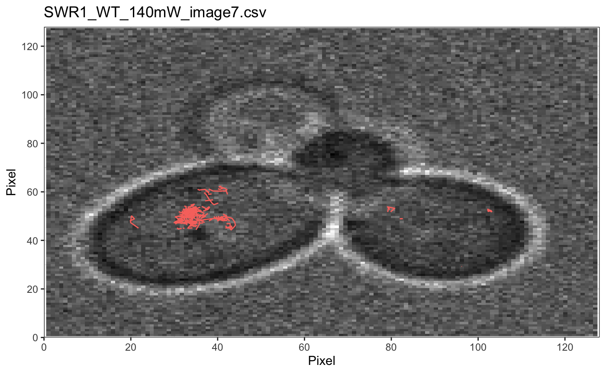#> #> Done!plotNucTrackOverlay(folder=track.folder,trackll.masked, nrow=1,ncol=1,width=8,height=8)#> #> Processing SWR1_WT_140mW_image6.csv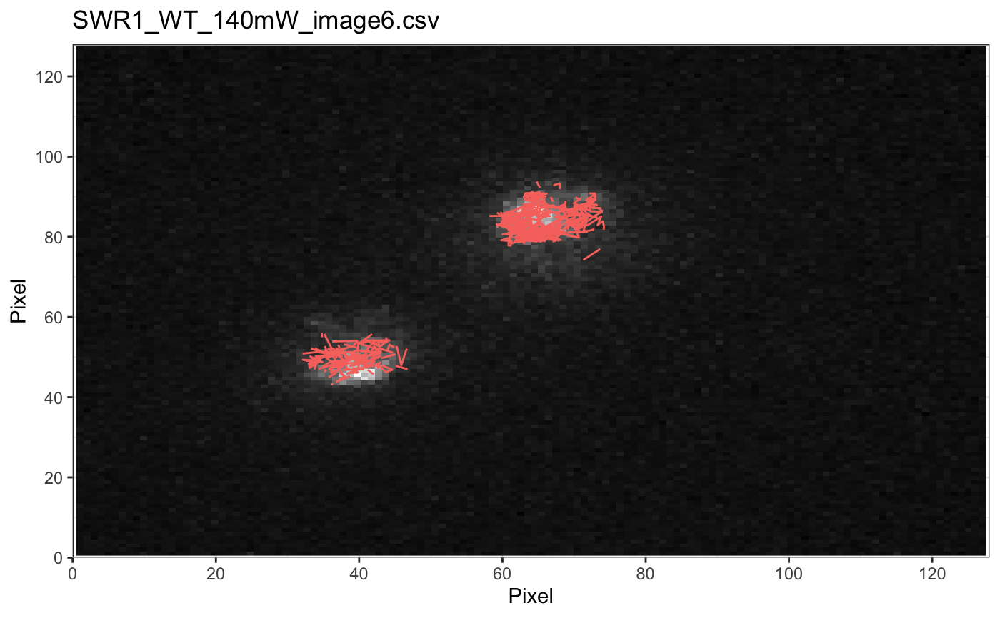#> #> Processing SWR1_WT_140mW_image7.csv#> #> Output combined plot...#> #> Done!## plot mask plotMask(track.folder,nrow=1,ncol=1,width=8,height=8)#> #> Reading mask file SWR1_WT_140mW_image6_MASK.tif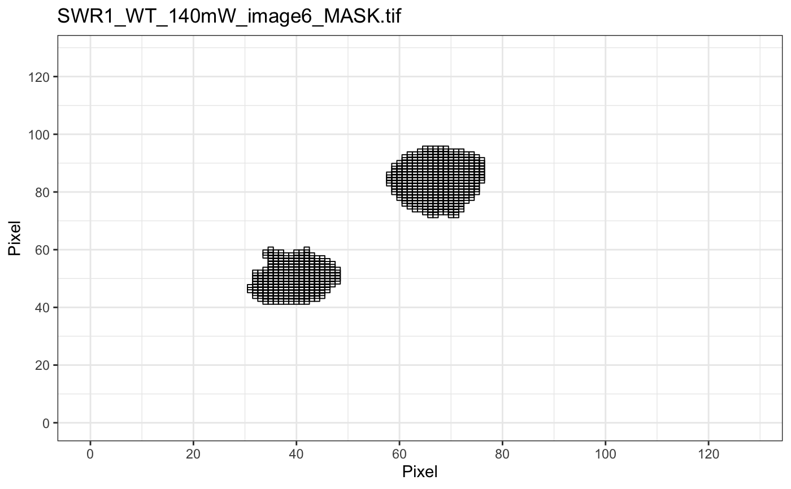#> #> Reading mask file SWR1_WT_140mW_image7_MASK.tif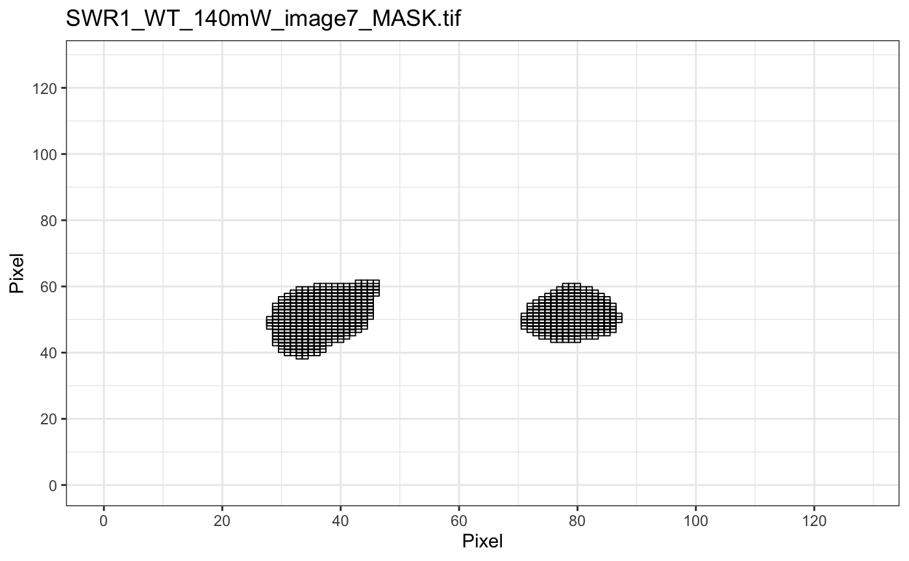#> #> Done!## plotComponentTrackOverlay (see selComponentTracks() for more details) folder2=system.file("extdata","SWR1_2",package="sojourner") trackll=createTrackll(folder=folder2, input=3)#> #> Reading ParticleTracker file: SWR1_WT_140mW_image6.csv ... #> #> mage6 read and processed. #> #> Reading ParticleTracker file: SWR1_WT_140mW_image7.csv ... #> #> mage7 read and processed. #> #> Process complete.## use mergeTracks() for per folder comparison, the analsyis result ## can't be plot ##back to original image. To see component tracks on original nuclei image, ## do not use mergeTracks(), for per movie analysis. ## compute MSD MSD=msd(trackll=trackll,plot=TRUE)#> applying filter, min 7 max Inf #> 45 tracks length > & = 1 45 tracks length > & = 2 45 tracks length > & = 3 45 tracks length > & = 4 45 tracks length > & = 5 45 tracks length > & = 6 #> #> ... #> 32 tracks length > & = 1 32 tracks length > & = 2 32 tracks length > & = 3 32 tracks length > & = 4 32 tracks length > & = 5 32 tracks length > & = 6 #> #> ...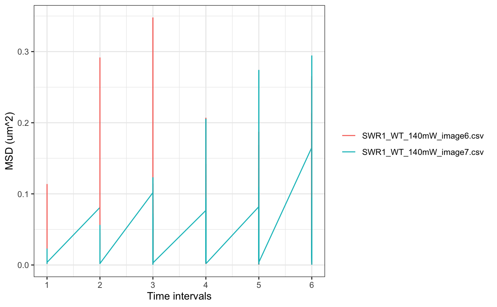#> applying filter, min 7 max Inf #> 45 tracks length > & = 1 45 tracks length > & = 2 45 tracks length > & = 3 45 tracks length > & = 4 45 tracks length > & = 5 45 tracks length > & = 6 #> #> ... #> 32 tracks length > & = 1 32 tracks length > & = 2 32 tracks length > & = 3 32 tracks length > & = 4 32 tracks length > & = 5 32 tracks length > & = 6 #> #> ...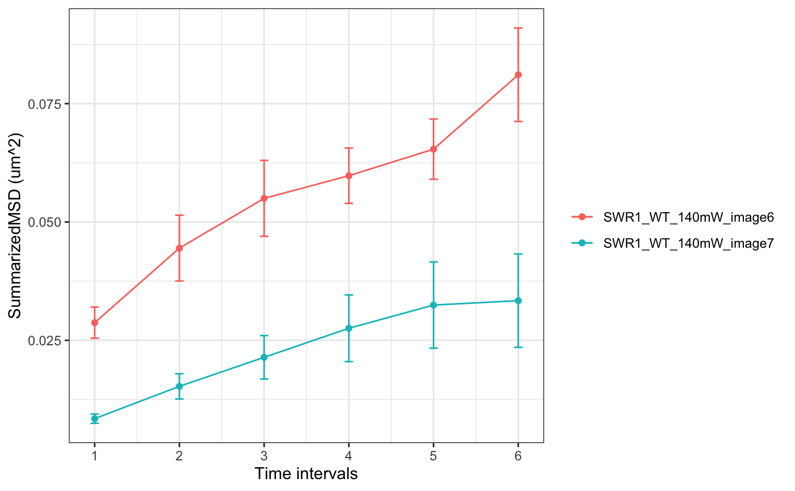#> #> applying static,lag.start= 2 lag.end= 5 #> lag.start 2 lag.end 5 #> #> Applying r square filter... 0.8#> Warning: NaNs produced#> #> Plotting histogram... #> auto binwidth = 0.3670873#> Warning: Removed 3 rows containing non-finite values (stat_bin).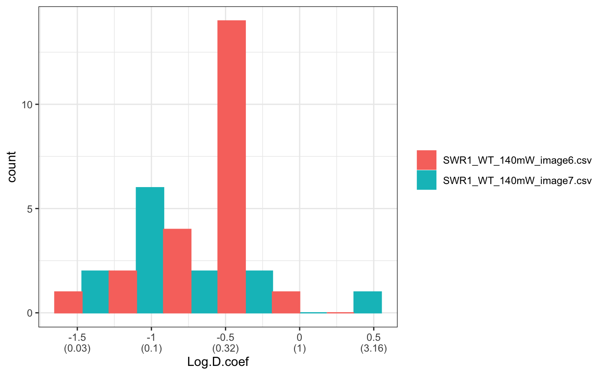#> #> Plotting density... #> auto binwidth = 0.3670873#> Warning: Removed 3 rows containing non-finite values (stat_bin).#> Warning: Removed 3 rows containing non-finite values (stat_density).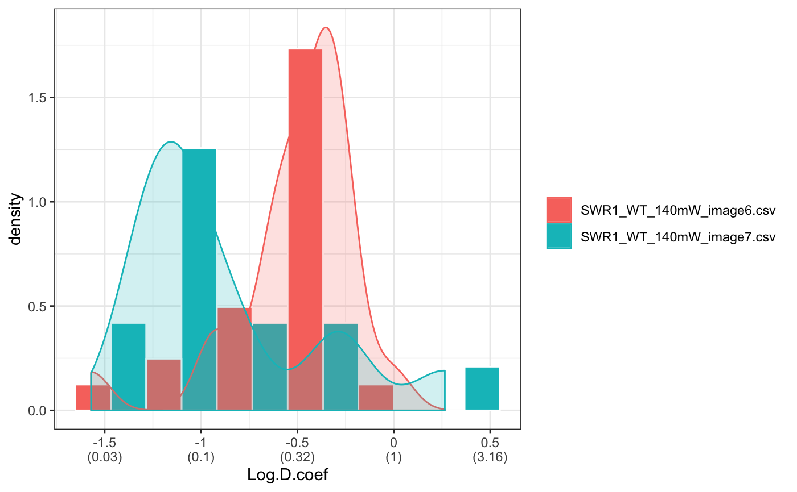## fit normal distribution to define component ## set seed to reproduce results (see fitNormalDistr() for details on seed) set.seed(123) fit=fitNormDistr( dcoef,components=2,log.transform=TRUE,combine.plot=FALSE,output=FALSE)#> #> IMPORTANT: Ensure a seed has been manually set! See help docs for more info.#> Warning: NaNs produced#> number of iterations= 111 #> summary of normalmixEM object: #> comp 1 comp 2 #> lambda 0.230280 0.769720 #> mu -0.853133 -0.399750 #> sigma 0.439276 0.159796 #> loglik at estimate: -1.451852 #> NULL #> auto binwidth = 0.2613932 #> #> approximating standard error by parametic bootstrap... #>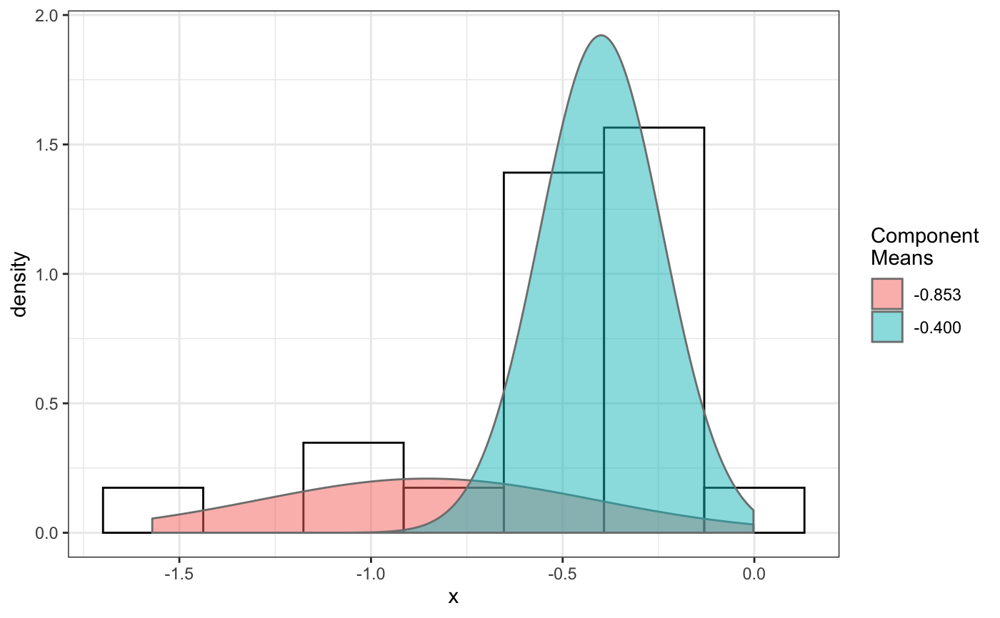#> number of iterations= 36 #> summary of normalmixEM object: #> comp 1 comp 2 #> lambda 0.762453 0.237547 #> mu -1.115761 -0.123334 #> sigma 0.168953 0.283096 #> loglik at estimate: -3.694853 #> NULL #> auto binwidth = 0.3235475 #> #> approximating standard error by parametic bootstrap... #>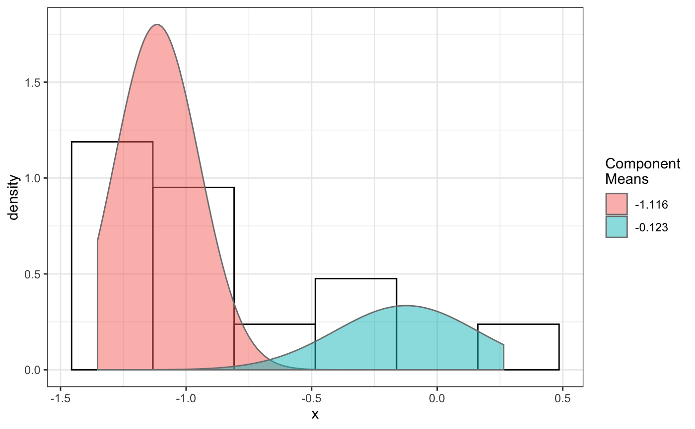#> $SWR1_WT_140mW_image6.csv #> [,1] [,2] #> proportion 0.2302799 0.7697201 #> mean -0.8531329 -0.3997502 #> sd 0.4392757 0.1597965 #> log.lik -1.4518518 -1.4518518 #> #> $SWR1_WT_140mW_image7.csv #> [,1] [,2] #> proportion 0.7624532 0.2375468 #> mean -1.1157610 -0.1233342 #> sd 0.1689532 0.2830961 #> log.lik -3.6948531 -3.6948531 #>## select component tracks based on fitting trackll.sel=selComponentTracks(trackll, fit=fit,likelihood = 0.9,dcoef = dcoef,log.transformed=TRUE, output=FALSE)#> #> at likelihood of 0.9 , the number of trajectories selected are: #> comp.1 comp.2 #> SWR1_WT_140mW_image6.csv 3 12 #> SWR1_WT_140mW_image7.csv 10 3## plot component tracks plotComponentTrackOverlay(folder2,trackll.sel=trackll.sel)#> #> Processing SWR1_WT_140mW_image6.csv #> Processing SWR1_WT_140mW_image7.csv #> Processing SWR1_WT_140mW_image6.csv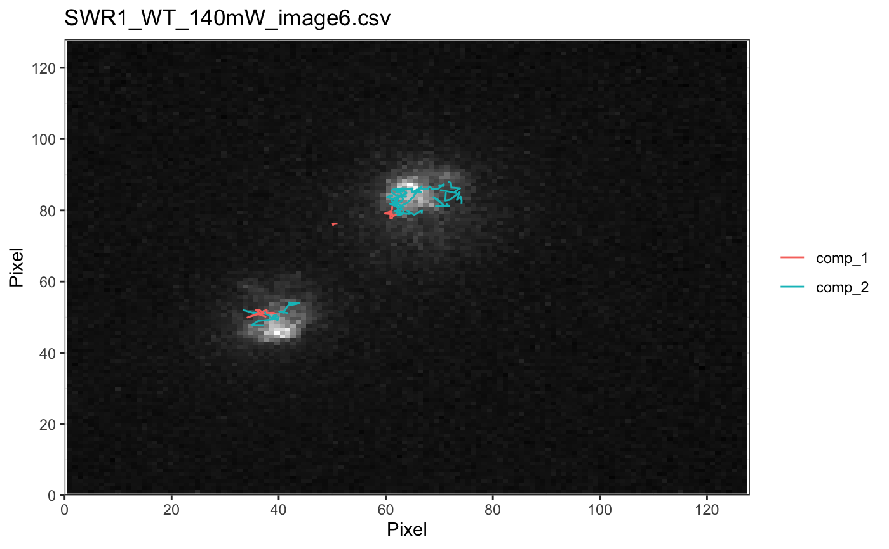#> #> Processing SWR1_WT_140mW_image7.csv#> #> Output combined plot...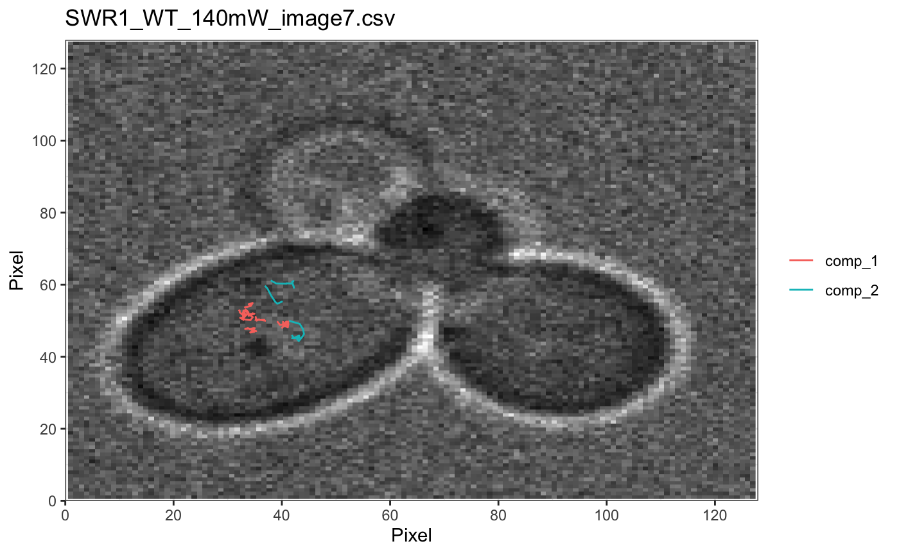#> #> Done!